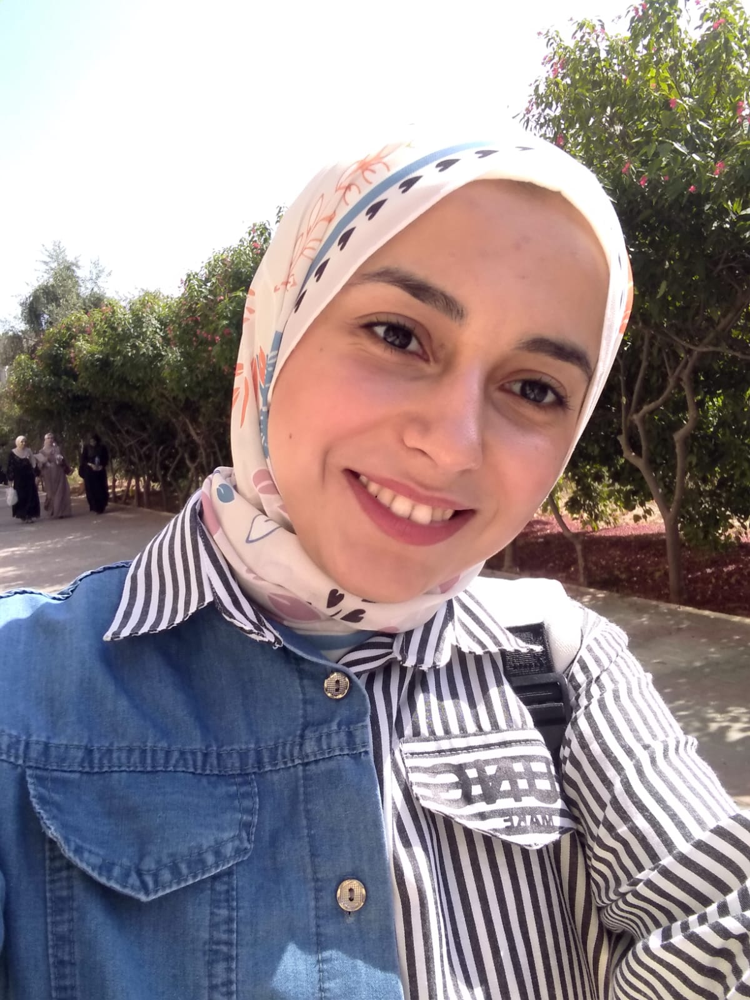

Nelover W. Aburas
SOFTWARE ENGINEER

Summary
Creative Developer talented in Mobile Development at integrating novel design elements and interaction points to
build new and exciting user experiences. Committed to presenting users with easy-to- use interfaces, strong
attention to detail skills with clean coding expertise.
Education
- A Bachelor of Engineering: Software Engineering
Al-Azhar University - Gaza (2018-2023)
GPA: 94.95% “Excellent with 1st Honor Degree”
Work experience
- Freelancer - UpWork, Mostaql
Aug 2023 - current
- Design Interfaces with animation.
- State management.
- Flutter Developer - Portals, Gaza
Aug 2021 - Aug 2023
- Skilled at working independently and collaboratively in a team environment.
- Learned and adapted quickly to new technology and software applications.
- Proved successful working within tight deadlines and a fast-paced environment.
- Cultivated interpersonal skills by building positive relationships with others.
- Self-motivated, with a strong sense of personal responsibility.
- Experience in MVC.
- Experience on state management tools like GetX and
Provider.
- Able to handle JSON and XMLHTTP requests from
web services.
- Expertise in Android and IOS application
development using Android SDK, Android emulator,
Xcode and IOS simulator.
- Experience on uploading iOS apps to TestFlight for
beta version or distribution.
- Experience on Firebase.
- Web Development - Portals, Gaza
Jume 2020 - Sep 2020
- HTML, CSS, Bootstrap.
- WordPress.
Skills
- API ⭐️⭐️⭐️⭐️⭐️
- Postman ⭐️⭐️⭐️⭐️⭐️
- Figma and adobe XD ⭐️⭐️⭐️⭐️
- Errors and bugs fixing ⭐️⭐️⭐️⭐️⭐️
- WordPress ⭐️⭐️⭐️
- SEO ⭐️⭐️⭐️⭐️
- ClickUp ⭐️⭐️⭐️⭐️⭐️
- Scrum methodology ⭐️⭐️⭐️⭐️
Rewards
- Second position in the mathematics competition established on West The Gaza Strip - 2012
- Valedictorian reward for being in the first position in the collage - 2023
Others
© Nelover Aburas. All rights reserved.